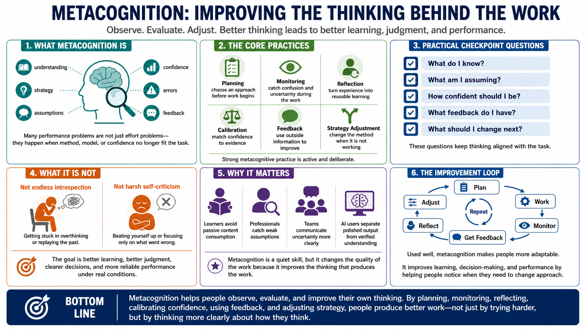

Course Summary and Key Takeaways
Connecting to LMS... Progress: in progress

Narration
Metacognition helps people observe, evaluate, and improve their own thinking. It includes awareness of understanding, strategy, assumptions, confidence, errors, and feedback. It is useful because many learning and performance problems are not caused by lack of effort alone. They happen because people do not notice when their current method, model, or confidence is no longer aligned with the task.
Strong metacognitive practice includes planning, monitoring, reflection, calibration, feedback, and strategy adjustment. Planning helps choose an approach before work begins. Monitoring catches confusion and uncertainty while work is in progress. Reflection turns experience into reusable learning. Calibration keeps confidence connected to evidence. Strategy adjustment changes the method when the current method is not working.
The goal is not endless introspection or harsh self-criticism. The goal is better learning, better judgment, clearer decisions, and more reliable performance under real conditions. Metacognition gives people practical checkpoints: what do I know, what am I assuming, how confident should I be, what feedback do I have, and what should I change next?
Used well, metacognition makes people more adaptable. It helps learners avoid passive content consumption, helps professionals catch weak assumptions, helps teams communicate uncertainty, and helps AI users separate polished output from verified understanding. It is a quiet skill, but it changes the quality of the work because it improves the thinking that produces the work.